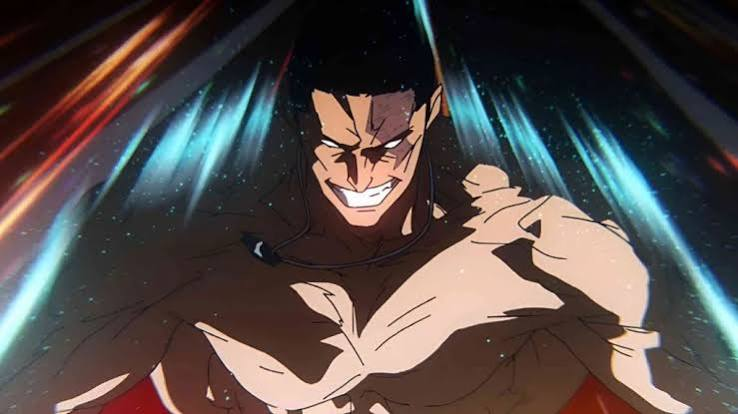
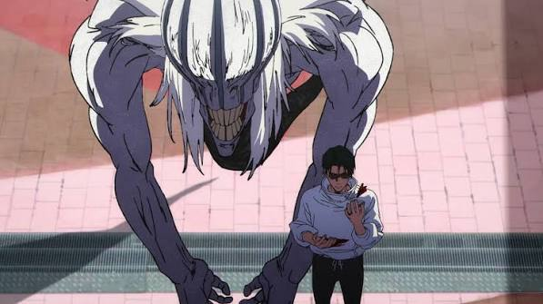
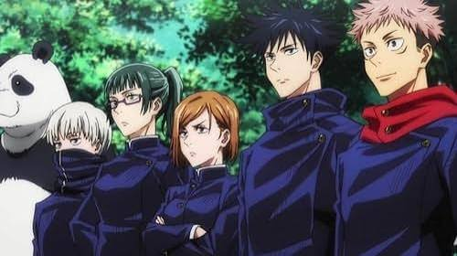
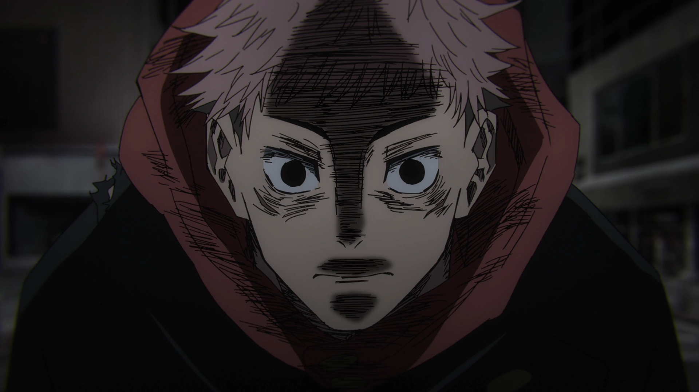

Anime excels at crafting intricate, high-stakes action, and Jujutsu Kaisen perfectly demonstrates how the battle shonen genre has evolved into something utterly breathtaking. The medium allows for combat systems that are as intellectually stimulating as they are visually explosive. In JJK, the concepts of Cursed Energy and Domain Expansions aren't just flashy superpowers; they are complex, heavily tactical magic systems that require deep strategy to master. Every fight is a kinetic chess match where characters must outsmart their opponents while executing physics-defying hand-to-hand choreography. Anime’s ability to manipulate pacing, emphasize impacts with dynamic camera angles, and amplify the hype with a booming soundtrack makes these action sequences feel like adrenaline injected straight into the viewer’s veins, proving that animated action can far surpass the constraints of live-action stunt work.

Beyond explosive action, anime is a masterclass in atmospheric terror, effortlessly blending dark fantasy and horror to create deeply unsettling experiences. Jujutsu Kaisen leans heavily into this, using the boundless freedom of animation to design Cursed Spirits that are genuinely nightmarish amalgamations of human fear and negative emotion. Unlike live-action CGI, which can often pull a viewer out of the moment, anime's illustrated nature makes grotesque body horror and eerie environments feel cohesive and deeply visceral. When villains like Mahito contort human souls or Ryomen Sukuna unleashes his overwhelming, blood-chilling malice, the medium uses stark shadows, distorted line work, and unsettling audio design to make the dread feel palpable. It showcases how anime can delve into macabre, spine-tingling themes, creating a horror experience that is uniquely psychological and intensely disturbing.

One of the most remarkable things about anime is its ability to seamlessly weave quiet, character-driven genres into grander narratives, such as incorporating high school slice-of-life comedy into a bleak world. Amidst the world-ending stakes, Jujutsu Kaisen takes the time to remind us that its protagonists are just ordinary teenagers attending Jujutsu High. Anime thrives on these tonal shifts, using exaggerated comedic expressions, simplified character models, and vibrant lighting to deliver genuinely hilarious banter—whether the central trio is arguing over food in Harajuku or playing an intensely petty game of baseball against their rival school. These slice-of-life moments are not just filler; they are vital to the medium’s storytelling, building immense empathy and attachment to the characters. By contrasting the mundane warmth of youth with the darkness of their reality, anime makes us deeply care about who survives.

Finally, anime frequently operates as a profound psychological tragedy, tackling existential questions and the fragility of the human mind with devastating emotional weight. Jujutsu Kaisen uses its supernatural premise as a vehicle to explore intense grief, moral ambiguity, and the heavy burden of duty. The narrative pulls no punches when breaking down the psyches of characters like Yuji Itadori, who is repeatedly forced to confront his own powerlessness and the collateral damage of his existence, or Suguru Geto, whose descent into extremism is framed as a heartbreaking ideological collapse. Anime excels at depicting these internal mental landscapes, using surreal, abstract imagery and hauntingly raw voice performances to externalize a character's fractured mental state. This genre blending proves that the medium is not just about cool fights or monsters; it is a profound storytelling tool capable of delivering emotionally shattering tragedies that stay with you long after the screen goes dark.